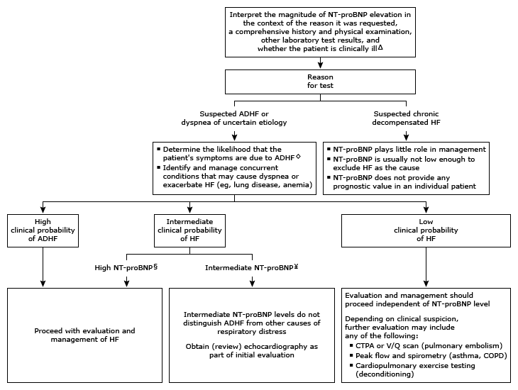

Initial evaluation of high N-terminal pro-B-type natriuretic peptide in adults*¶

This algorithm is intended for use with additional UpToDate content on NT-proBNP in the evaluation of HF.
NT-proBNP: N-terminal pro-B-type natriuretic peptide;
ADHF: acute decompensated heart failure;
HF: heart failure;
CTPA: computed tomography-pulmonary angiography;
V/Q: ventilation/perfusion;
COPD: chronic obstructive pulmonary disease;
BNP: B-type natriuretic peptide;
GFR: glomerular filtration rate.
* NT-proBNP has reference limits based on age and gender, but reference ranges vary by country. In general, NT-proBNP levels <300 pg/mL are optimal for excluding a diagnosis of HF. NT-proBNP is cleared by the kidneys, and optimal cutoff values have not been established. Unlike BNP, NT-proBNP levels do not increase in patients taking an angiotensin receptor-neprilysin inhibitor. Interpretation of a specific abnormal result should be based upon the reference range reported with that result.
¶ The diagnosis of HF is a clinical diagnosis based upon finding a constellation of clinical symptoms and signs. Conditions other than HF can also cause high NT-proBNP levels. Refer to UpToDate graphics on common triggers of elevated BNP and NT-proBNP.
Δ Patients with ADHF require prompt diagnosis, identification of the underlying cause(s) and triggers, and treatment. ◊ The pretest probability of HF is based on traditional assessment (ie, a comprehensive history, physical examination, and review of tests usually obtained at the time of NT-proBNP measurement).
§ High NT-proBNP levels:
≥450 pg/mL in adults <50 years old
≥900 pg/mL in adults ≥50 years old if GFR ≥60 mL/min/1.73 m2
≥1200 pg/mL in adults ≥18 years old if GFR <60 mL/min/1.73 m2
¥ Intermediate NT-proBNP levels:
301 to 449 pg/mL in adults <50 years old
301 to 899 pg/mL in adults ≥50 years old if GFR ≥60 mL/min/1.73 m2
<1200 pg/mL in adults ≥18 years old if GFR <60 mL/min/1.73 m2